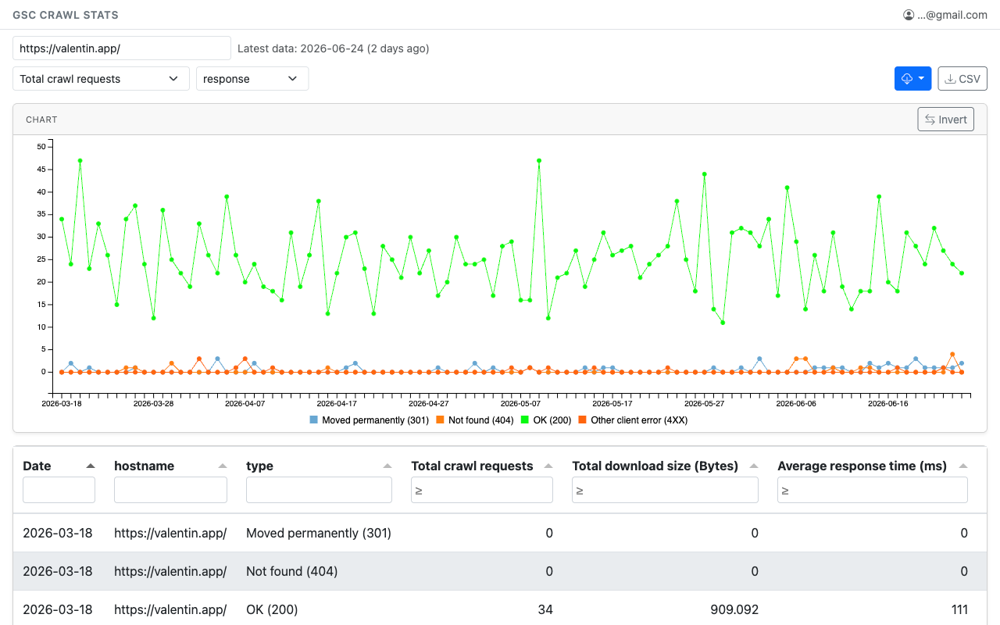
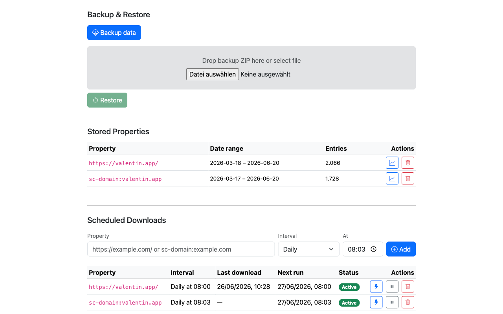

Download, visualise, and schedule Google Search Console crawl statistics — all in your browser, no backend required.
Built as a Chrome extension — no server, no API key, no data leaves your browser.
Fetches all crawl stat categories in one go: response codes, file types, Googlebot type, and more.
Line chart with instant legend toggle and an Invert button to flip your series selection — no lag even with many categories.
Per-column header filters, numeric ≥ filters, sortable columns, pagination, and one-click CSV export.
Set daily or weekly jobs at a time of your choice via Chrome alarms — runs in the background even without an open tab.
Browse every property with local data: see date ranges, open in the chart view, or delete individual datasets — from the Options page.
Export all data as a timestamped ZIP. Preview the property count before writing, then restore with a single click.
A clean, card-based UI with live progress — straight in your browser, no setup required.
Interactive chart and filterable table with all crawl categories for any GSC property.

Manage scheduled jobs, browse stored properties, and handle backup/restore.

Install from the Chrome Web Store or load from source in minutes.
Download the latest extension.zip from the Releases page.
Unzip it, then open chrome://extensions and enable Developer mode.
Click Load unpacked and select the unzipped folder.
Open Google Search Console in a tab, then click the extension icon.
GSC Crawl Stats Downloader has no server. It doesn't collect, transmit, sell, or share your data.
search.google.com. It also reads the email address of the signed-in account and shows it in the
extension header. When a Search Console tab is open, it reads that tab's address to pre-select the property.
chrome.storage.local). If you use “fetch & backup” or
“Backup data”, files are saved to your Downloads folder.
search.google.com, the same as when you use Search
Console yourself. It has no analytics, tracking, advertising, or third-party services, and your email
address and credentials never leave your browser.
Last updated: November 2026